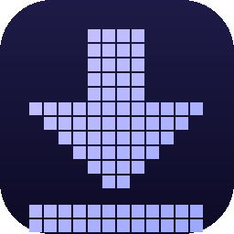

Paste any link, or download in Chrome as usual and Downy takes over
SettingsSaving
Where Downy puts your files
How many connections and downloads run at once
How downloads from Chrome reach Downy
How Downy starts, closes and tells you things
The version, updates and the tools Downy uses for YouTube
Step 1 of 2
Choose where Downy saves your downloads. You can change this later in Settings.
Step 2 of 3
Downy uses yt-dlp to read videos, ffmpeg to join video and audio, and Deno to solve YouTube's player checks. Downy installs the ones you don't have with winget, the package manager built into Windows. This takes a minute or two.
Step 2 of 2
The extension puts a Download button on YouTube videos and hands Chrome downloads to Downy. Chrome only lets you add it by hand, which takes a minute.
chrome://extensions